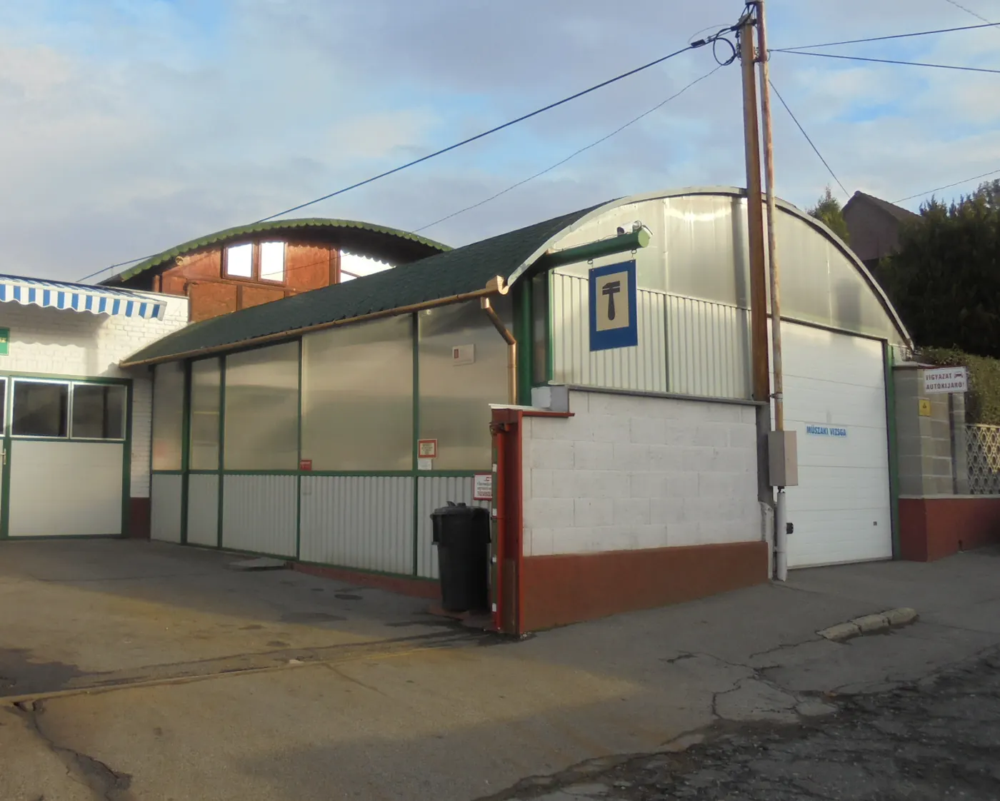
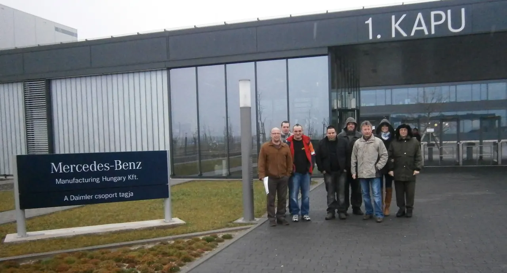
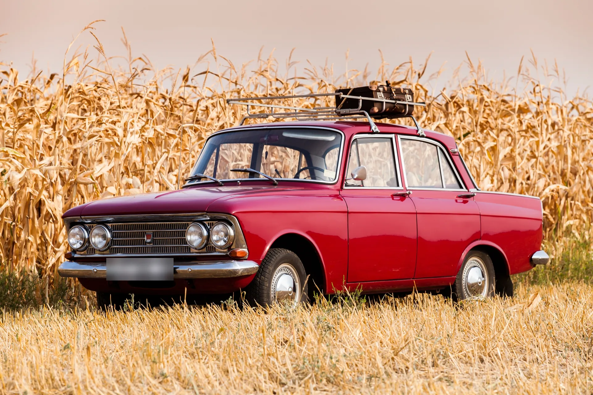

Autószerviz és műszaki vizsga Pécsen, egy helyen
Autója problémáját gyorsan, szakszerűen, jó áron mérjük fel és javítjuk meg – a megjavított autó pedig helyben, a saját vizsgasorunkon levizsgázhat.

autószerviz
Műszaki vizsga: mennyibe kerül, és melyik utat válassza?
Kétféleképpen vizsgáztathat nálunk. Válassza ki a járművet, és összevetjük a két utat a hatályos díjakkal.
Milyen járművel jönne?
Vizsgadíjak 2025. 02. 01-től, ÁFA-mentes hatósági díj + szolgáltatói díj. Az előzetes átvizsgálás külön megrendelésre készül.
Időpontot kérek vizsgáraMotor, futómű, autóvillamosság – egy helyen
Gépjárművek karbantartása, javítása, műszaki vizsgáztatása és eredetvizsgálata. Az árainkat előre, nyilvánosan közöljük.
- Új: hibrid és elektromos autók javítása
- Gépjárműjavítás
- Állapotfelmérés
- Autóvillamosság
- Futóműállítás
- Műszaki vizsga
- Eredetvizsgálat
- Gumiszerelés
- Motorok forgalomba helyezése
Árak egy pillantással
| Rezsióradíj, személyautó25 évnél nem régebbi típusok | 27 520 Ft |
| Rezsióradíj: Alfa, Audi, BMW, Mercedes; autóvillamosság, hibrid, elektromos | 29 210 Ft |
| Időszakos szerviz, személyautóolaj, olaj-, lég-, pollenszűrő, szerviztörlés | 35 560 Ft |
| Első fékbetét csere, személyautó | 27 940 Ft |
| Futómű mérés műszerrel | 20 320 Ft |
| Hibakód olvasás, törlés, szerviz-intervallum visszaállítás | 17 780 Ft |
| Gumicsere lemezfelni, 13–15″, 4 db, felszerelve | 17 145 Ft |
| Árajánlat magánszemélyeknekelfogadott ajánlatnál jóváírjuk a végszámlából | ingyenes |
Három generáció ugyanabban a műhelyben
Képzett szakemberek – a csapatban három mestervizsgával rendelkező is van –, korszerű műszerek. Az általunk végzett munkákra garanciát vállalunk.
- 1989Szélig Márton autószerelő mester és technikus megalapítja a vállalkozást. Előbb Gábor, majd Ferenc nevű fia csatlakozik.
- 2008A családi vállalkozásból Kft. alakul.
- Saját vizsgasorA visszaforgatott nyereségből: a megjavított járművek a helyszínen levizsgázhatnak.
- MaHibrid és elektromos autók javítása is.


Közös szenvedélyünk: a veterán autók és motorok
Néhány kép a fényképalbumunkból: Moszkvics 408, Lancia Fulvia 2C, Honda Benly, Mercedes-Benz SL.
Negyedszázados törzsvevők
52 Google-vélemény alapján.
„Negyedszázada járok ebbe a szervizbe. Már a családi vállalkozás 3. generációja szereli az autóimat. … Úgy érzem, a létező legjobb szervizbe járok.”
★★★★★ · Google-vélemény„Körülbelül 2 perc alatt megtalálták a hibát az autómban, amit további néhány perc alatt ki is javítottak.”
★★★★★ · Google-vélemény„Adhoc problémával kerestem meg a Szervizt, és azonnal segítséget kaptam!”
★★★★★ · Google-véleményKérjen időpontot – visszahívjuk
Munkát előzetes időpont-egyeztetés után vállalunk. Hagyja meg a nevét és a számát, és munkaidőben visszahívjuk, hogy egyeztessünk.
06 72 239 134Hétfő–péntek: 7:30–12:00 és 13:00–16:30
Gyakori kérdések
Milyen iratok kellenek a műszaki vizsgához?
Személyi igazolvány (vagy fényképes jogosítvány), a kötelező biztosítás meglétét igazoló dokumentum, a forgalmi engedély, és ha nem a tulajdonos vagy az üzembentartó hozza a járművet, meghatalmazás. Cégeknél ezen felül cégbejegyzés, aláírási címpéldány, cégjegyzékszám és bélyegző, vagy meghatalmazás.
Mennyi ideig tart a műszaki vizsga?
Körülbelül 45 percig, ha nem kell javítást végezni.
Kell előre időpontot kérni?
Igen, munkát csak előzetes időpont-egyeztetés után vállalunk. Soron kívüli javítás 50% (nettó) felár ellenében lehetséges.
Hozhatok saját alkatrészt?
Nem, hozott alkatrészekkel nem dolgozunk.
Mennyi garanciát vállalnak?
Új alkatrészre hat hónapot, gyári alkatrészre egy évet, felújított alkatrészre három hónapot. A részleteket az ÁSZF tartalmazza.
Javítanak hibrid és elektromos autót?
Igen, vállaljuk hibrid és elektromos autók javítását.
Kapcsolat
- Cím
- 7629 Pécs, Dobó István u. 44.
Útvonaltervezés - Telefon
- 06 72 239 134
- szeligauto@gmail.com
- Nyitva
- Hétfő–péntek: 7:30–12:00 és 13:00–16:30
Szombat, vasárnap: zárva